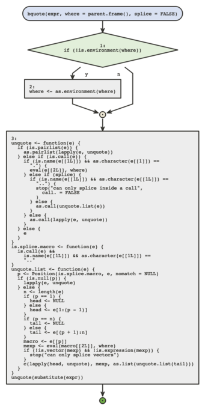
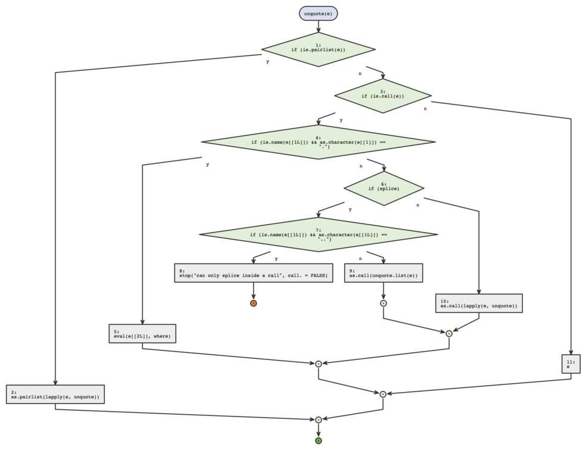
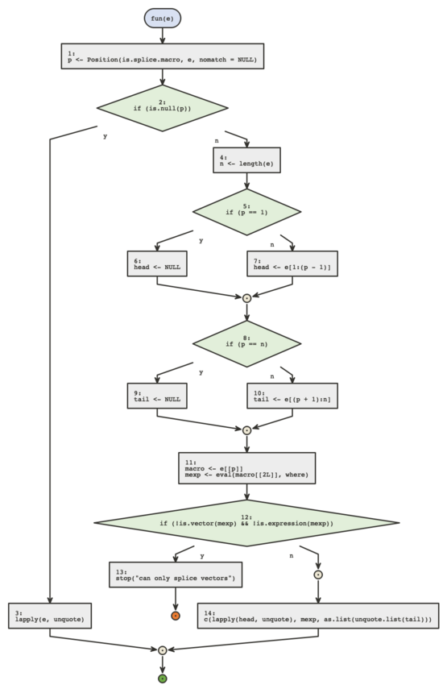

Many times a function will contain another function definition, these will not always be very readable in the body of the main function. {flow} offers a way to visualize those.
When using flow on the main function, a message will signify what
nested functions can be viewed. The base function bquote is
a good example.

We can then inspect those by using the nested_fun
argument, with a numeric id or a name (if unambiguous)
flow_view(bquote, nested_fun = "unquote")
flow_view(bquote, nested_fun = 3)